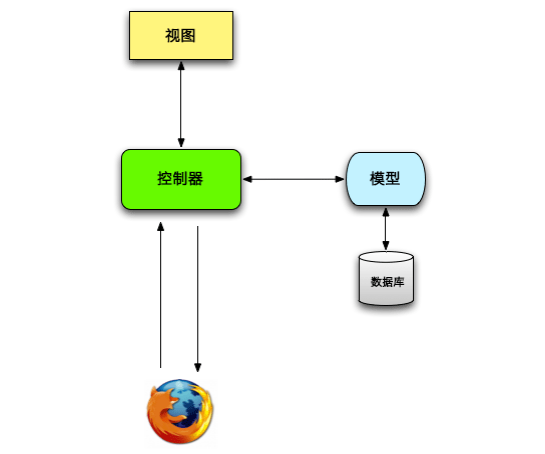

$ cd
$ mkdir workspace
$ cd workspace
$ rails new hello_app
$ cd hello_app
$ ls -l
了解项目目录结构
$ bundle install
$ rails server
models / views / controllers

# app/controllers/application_controller.rb
def hello
render text: "hello, world!"
end
# config/routes.rb
# root 'welcome#index'
root 'application#hello'
版本控制是软件开发中最基本的事情，第一次使用，需要先配置一下
$ git config --global user.name "Your Name"
$ git config --global user.email your.email@example.com
$ git config --global push.default matching
$ git config --global alias.co checkout
$ git init
$ git add -A
$ git status
$ git commit -m "Initialize repository"
$ git log
$ rm -rf app/controllers/
$ ls app/controllers/
$ git status
$ git checkout -f
$ git status
$ ls app/controllers/
$ git remote add origin git@bitbucket.org:quake/hello_app.git
$ git push -u origin --all
branch / commit / merge / push
$ git checkout -b modify-README
$ git branch
$ git mv README.rdoc README.md
# Ruby on Rails Tutorial: "hello, world!"
This is the first application for the
[*Ruby on Rails Tutorial*](http://www.railstutorial.org/)
by [Michael Hartl](http://www.michaelhartl.com/).
$ git status
$ git commit -a -m "Improve the README file"
$ git checkout master
$ git merge modify-README
$ git branch -d modify-README
$ git push